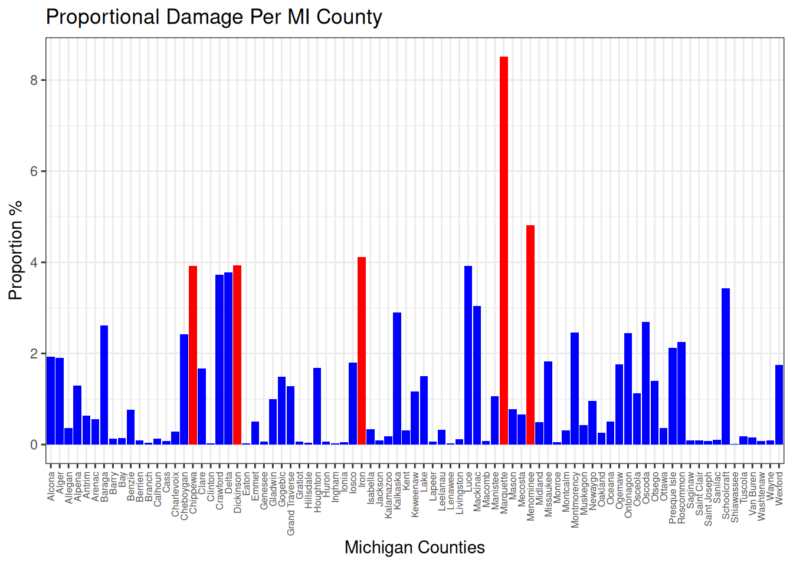

Final Project: Understanding the Impacts of wildfire in Michigan
FOR 128: Final Project Methods
Published
December 9, 2024
Introduction
Wildfire is a natural ecological disturbance, and many ecosystems in Michigan depend on it for regeneration, such as Jack Pine stands, which only disperse their seeds when exposed to extreme heat. The MI DNR often sets controlled burns to safely attain these benefits. However, historically wildfires have been suppressed, which leads to a build up of fuel, resulting in more extreme wildfires when they do occur. Climate change also increases the severity of wildfires in Michigan by creating hotter, drier summers and increasing the length of the wildfire season. Combining climate change and fire suppression creates a high risk of severe wildfires that are harder to control. Currently, Michigan is experiencing an increasing intensity of wildfires because of these factors, which poses both a public safety and an ecological health problem for our state.
Methods
Import modules
library(sf)
Linking to GEOS 3.12.1, GDAL 3.8.4, PROJ 9.4.0; sf_use_s2() is TRUE
── Conflicts ────────────────────────────────────────── tidyverse_conflicts() ──
✖ dplyr::filter() masks stats::filter()
✖ dplyr::lag() masks stats::lag()
ℹ Use the conflicted package (<http://conflicted.r-lib.org/>) to force all conflicts to become errors
Loading in the data
#Load in datacounty_data <-read_csv('CountyData.csv')
Rows: 83 Columns: 30
── Column specification ────────────────────────────────────────────────────────
Delimiter: ","
chr (3): country, State, County
dbl (27): area_ha, extent_2000_ha, extent_2010_ha, gain_2000-2020_ha, tc_los...
ℹ Use `spec()` to retrieve the full column specification for this data.
ℹ Specify the column types or set `show_col_types = FALSE` to quiet this message.
counties_map <-read_sf("Counties_(v17a).shp")
Creating the Scatter Plot
# Creating the scatter plot# Read in datawildfire_data <-read_csv(file ="CountyData.csv")
Rows: 83 Columns: 30
── Column specification ────────────────────────────────────────────────────────
Delimiter: ","
chr (3): country, State, County
dbl (27): area_ha, extent_2000_ha, extent_2010_ha, gain_2000-2020_ha, tc_los...
ℹ Use `spec()` to retrieve the full column specification for this data.
ℹ Specify the column types or set `show_col_types = FALSE` to quiet this message.
# Transform data to long formatwf_data_long <- wildfire_data %>%pivot_longer(cols =contains("tc_loss"),names_to ="Year",values_to ="loss_ha") %>%mutate(Year =as.numeric(str_remove(Year, "tc_loss_ha_"))) %>%# Ensure 'Year' is numericselect(-c(area_ha, extent_2000_ha, `gain_2000-2020_ha`)) %>%group_by(Year) %>%summarise(loss_ha =sum(loss_ha, na.rm =TRUE))# Perform linear regressionwf_model <-lm(loss_ha ~ Year, data = wf_data_long)# Display the summary of the modelsummary(wf_model)
Call:
lm(formula = loss_ha ~ Year, data = wf_data_long)
Residuals:
Min 1Q Median 3Q Max
-9139.4 -2430.4 910.7 2892.1 6057.2
Coefficients:
Estimate Std. Error t value Pr(>|t|)
(Intercept) -1463196.9 284185.1 -5.149 4.22e-05 ***
Year 741.6 141.2 5.250 3.33e-05 ***
---
Signif. codes: 0 '***' 0.001 '**' 0.01 '*' 0.05 '.' 0.1 ' ' 1
Residual standard error: 4493 on 21 degrees of freedom
Multiple R-squared: 0.5676, Adjusted R-squared: 0.547
F-statistic: 27.57 on 1 and 21 DF, p-value: 3.325e-05
# Plot the dataplot(wf_data_long$Year, wf_data_long$loss_ha,main ="Tree Canopy Loss in Michigan from Wildfires",xlab ="Year",ylab ="Loss (ha)",pch =19, # Solid circle pointscol ="red") # Red color for points# Add the line of best fitabline(wf_model, col ="blue", lwd =2) # Line of best fit in blue
Creating the Boxplot
# Create a boxplot with ggplotggplot(data = wf_data_long, aes(y = loss_ha)) +geom_boxplot() +labs(title ="Boxplot of Loss (ha)",x ="Michigan", # Removes x-axis labely ="Loss (ha)" ) +theme_minimal() +theme(axis.text.x =element_blank(), # Hides x-axis textaxis.ticks.x =element_blank() # Hides x-axis ticks )
# A tibble: 1 × 5
Min Q1 Median Q3 Max
<dbl> <dbl> <dbl> <dbl> <dbl>
1 13094 25762. 28407 35328. 38363
Creating the Heat Map
# Edit tibbles and extract datacounty_avg_tcl <- county_data %>%pivot_longer(cols =contains("tc_loss"),names_to ="Year",values_to ="Loss_(ha)") %>%mutate(Year_type =str_remove(Year, "tc_loss_ha_")) %>%select(-c(area_ha, extent_2000_ha, extent_2010_ha, `gain_2000-2020_ha`)) %>%group_by(County) %>%summarise(avg_loss_ha =mean(`Loss_(ha)`)) %>%ungroup() %>%mutate(County =case_when( County =='Saint Joseph'~'St. Joseph', County =='Saint Clair'~'St. Clair',TRUE~ County )) county_avg_tcl
# A tibble: 83 × 2
County avg_loss_ha
<chr> <dbl>
1 Alcona 557.
2 Alger 551.
3 Allegan 104.
4 Alpena 376.
5 Antrim 183.
6 Arenac 161.
7 Baraga 754.
8 Barry 38.4
9 Bay 39.9
10 Benzie 220.
# ℹ 73 more rows
# Create Tibble to house the top five county means for tree cover loss top_five_county_mean <- county_avg_tcl %>%slice_max(order_by = avg_loss_ha, n =5)top_five_county_mean
# A tibble: 5 × 2
County avg_loss_ha
<chr> <dbl>
1 Marquette 2461.
2 Menominee 1392.
3 Iron 1189.
4 Dickinson 1136.
5 Chippewa 1134.
# Plotting the finalized mean data# Code Referenced: https://www.andrewheiss.com/blog/2023/07/28/gradient-map-fills-r-sf/, accessed November 28th, 2024#Join the extracted data with the map datacounties_map <- counties_map %>%left_join(county_avg_tcl, by =c("NAME"="County")) # Plotting the dataggplot(data = counties_map) +geom_sf(aes(fill = avg_loss_ha), color ="black") +scale_fill_viridis_c(option ="plasma", name ="Tree Cover Loss (ha)") +theme_minimal() +labs(title ="Michigan Counties: Mean Tree Cover Loss 2001-2023",caption ="Source: https://www.globalforestwatch.org/dashboards/country/USA/23/" )
Creating the Proportional bar chart
# define basic variables for ease of use and calculations sums <-numeric(nrow(county_data))# Loop through rows of county_data, perform sum calculation, append to sum variablefor (i in1:nrow(county_data)) { sums[i] <-sum(county_data[i, 8:30])}# Sum the county sums to get the overall state sum.state_sum <-sum(sums)# Create Tibble house the proportional dataloss_proportion_data <-tibble('County'= county_data$County,'Tree cover loss sums (ha)'= sums,# Perform the proportion calculation and assign it to a column'Proportions'= (sums / state_sum) *100)loss_proportion_data
# Make table to using slice max to determine the top five proportions top_five_county_prop <- loss_proportion_data %>%slice_max(order_by = Proportions, n =5)top_five_county_prop
# A tibble: 5 × 3
County `Tree cover loss sums (ha)` Proportions
<chr> <dbl> <dbl>
1 Marquette 56600 8.51
2 Menominee 32021 4.82
3 Iron 27343 4.11
4 Dickinson 26120 3.93
5 Chippewa 26079 3.92
# Create a condition variable to help with the upcoming mutate statementtop_five_county_name <- top_five_county_prop$County# Add column to label which counties are in the top five listloss_proportion_data <- loss_proportion_data %>%mutate(top_five =case_when( County %in%c(top_five_county_name) ~'yes',!(County %in%c(top_five_county_name)) ~'no' ))loss_proportion_data
# A tibble: 83 × 4
County `Tree cover loss sums (ha)` Proportions top_five
<chr> <dbl> <dbl> <chr>
1 Alcona 12802 1.93 no
2 Alger 12682 1.91 no
3 Allegan 2393 0.360 no
4 Alpena 8640 1.30 no
5 Antrim 4218 0.634 no
6 Arenac 3707 0.558 no
7 Baraga 17347 2.61 no
8 Barry 884 0.133 no
9 Bay 917 0.138 no
10 Benzie 5066 0.762 no
# ℹ 73 more rows
# Plotting the proportion data as a bar plotggplot(data = loss_proportion_data, mapping =aes(x = County, y = Proportions, fill = top_five)) +geom_col() +# Assigning specific colors to the values established in the top_five columnscale_fill_manual(name ="Top Five County Proportions",values =c('no'='blue', 'yes'='red')) +theme_bw() +# Changing the x axis labels for better readability theme(axis.text.x =element_text(angle =90, vjust =0.5, hjust =1, size =6),legend.position ='none') +# adding a title and modifying the axis titleslabs(title ="Proportional Damage Per MI County") +xlab('Michigan Counties') +ylab("Proportion %")

Getting the proportional data for tree cover extent in 2000 and 2010
# Getting the tree cover totals for 2000 and 2010tc_data <- county_data %>%summarise(Total_TC_2000 =sum(extent_2000_ha),Total_TC_2010 =sum(extent_2010_ha))tc_data
# Getting the top five proportions for tree cover in 2000top_five_tc_proportions_2000 <- tc_proportions %>%slice_max(Proportion_tc_2000, n =5) %>%transmute(County,extent_2000_ha,Proportion_tc_2000)top_five_tc_proportions_2000
# Getting the top five proportions for tree cover in 2010top_five_tc_proportions_2010 <- tc_proportions %>%slice_max(Proportion_tc_2010, n =5) %>%transmute(County,extent_2010_ha,Proportion_tc_2010)top_five_tc_proportions_2010
Reviewing and Plotting the Net Change in Tree Cover
# Creating a tibble that had summed values for gain, loss, and net changenet_change_tc <- county_data%>%transmute(country, State, County, area_ha, extent_2000_ha, extent_2010_ha, 'gain_2000-2020_ha', tc_loss_ha_2001, tc_loss_ha_2002, tc_loss_ha_2003, tc_loss_ha_2004, tc_loss_ha_2005, tc_loss_ha_2006, tc_loss_ha_2007, tc_loss_ha_2008, tc_loss_ha_2009, tc_loss_ha_2010, tc_loss_ha_2011, tc_loss_ha_2012, tc_loss_ha_2013, tc_loss_ha_2014, tc_loss_ha_2015, tc_loss_ha_2016, tc_loss_ha_2017, tc_loss_ha_2018, tc_loss_ha_2019, tc_loss_ha_2020) %>%pivot_longer(cols =c("tc_loss_ha_2001", "tc_loss_ha_2002", "tc_loss_ha_2003", "tc_loss_ha_2004", "tc_loss_ha_2005", "tc_loss_ha_2006", "tc_loss_ha_2007", "tc_loss_ha_2008", "tc_loss_ha_2009", "tc_loss_ha_2010", "tc_loss_ha_2011", "tc_loss_ha_2012", "tc_loss_ha_2013", "tc_loss_ha_2014", "tc_loss_ha_2015", "tc_loss_ha_2016", "tc_loss_ha_2017","tc_loss_ha_2018","tc_loss_ha_2019", "tc_loss_ha_2020"),names_to ="tc_loss_ha_year",values_to ="tc_loss") %>%group_by(County) %>%summarize(gross_tc_loss =sum(tc_loss))gain_data <- county_data$`gain_2000-2020_ha`net_change_tc <- net_change_tc %>%mutate(gross_tc_gain = gain_data) NetChange <- net_change_tc$gross_tc_gain - net_change_tc$gross_tc_loss # Adding filler columns to the dataset so that the legend can have representative values mapped to themnet_change_tc <- net_change_tc %>%mutate(net_tc_change = NetChange, x ="Gain", y ="Loss")
# Creating a bar chart that displays the gain and loss in tree cover for every countychange_in_tc <-ggplot(data = net_change_tc) +geom_col(mapping =aes(x = County, y = gross_tc_loss, fill = y)) +geom_col(mapping =aes(x = County, y = gross_tc_gain, fill = x)) +scale_fill_manual(values =c("green", "red")) +theme_bw() +theme(axis.text.x =element_text(angle =90, size =4), plot.title =element_text(hjust = .5), legend.position ="right") +labs(y ="Tree Cover Change", title ="Change in Tree Cover From 2000-2020", fill ="Change in Tree Cover") +theme(legend.text=element_text(size=14), legend.title=element_text(size=14))
Results/Discussion
Over a 22 year period from 2001 - 2023, tree cover loss in Michigan as a whole due to wildfires has been steadily increasing. This could be attributed to both the increasing intensity and severity of wildfires and the increasing frequency of wildfires occurring. The combination of climate change and historical wildfire suppression in the state has led to the current increases in wildfire damage, and it will likely continue to increase if no changes are made to the current fire regime.
The amount of wildfires in Michigan has increased at a frightening rate over the last 22 years. According to the boxplot, the minimum amount of tree cover loss was 13,094 hectares in 2001, the IQR spans from 25,763 to 35,329, showing that the middle 50% of the counties that lost tree cover had lost an amount within this range. The maximum amount was 38,363, meaning that this was the amount of tree cover lost in Michigan in 2023. The difference between 2001 and 2023 is 25,269.
Looking closer at Michigan, the distribution of wildfire damages by county showcased the damage being concentrated in the northern region of lower Michigan and the majority of the Upper Peninsula. This result is not unexpected as the majority of Michigan’s forests reside in these regions. However, five counties showcased both the highest mean and proportional damages from 2001-2023: Marquette, Menominee, Iron, Dickinson, and Chippewa. The most notable of the five counties listed was Marquette, as it had an average loss rate of approximately 2,460 hectares per year and was shown to be responsible for 8% (56,600 hectares out of 664,880 hectares lost) of the overall wildfire damages within Michigan. In contrast, the other four counties only had an average loss rate of approximately 1,133-1,392 hectares per year and a proportional damage of approximately 3-4% (26079-32021 hectares out of 664,880 hectares lost).
Now although these results may cause one to question why Marquette boasts such massive losses in comparison to other counties, the answer to this becomes quite simple when looking at the overall tree cover and species composition within the area. Looking at our data, the initial tree cover for the year 2000 showcases that the top five counties for tree cover match the top five for mean and proportional loss, with Marquette still in 1st place accounting for 4% of the total tree cover, while the other four hover around 3% for each one. This suggests that Marquette has the highest tree density of all the counties, which encourages the spread of wildfires dramatically by making fuels more easily accessible. This flammability is emphasized by the tree species composition of Marquette as USFS maps show large amounts of Pinus strobus/resinosa/banksiana (White Pine, Red Pine, Jack Pine), which are all species that rely on, are adapted to, and encourage fire (Service, U. F. 2024)(Whitney, 1986). Especially Jack Pine, which relies on fire for regeneration, and has a return interval for fire of 50 to 100 years (Whitney, 1986).
Conclusion
Tree cover loss due to wildfires in Michigan has been steadily increasing over the past two decades due to various factors, including climate change and historical fire suppression. This is concerning because the more trees we lose, the more it feeds into the greenhouse effect. The more the greenhouse effect is fed, the more the tree loss count will rise, resulting in disastrous environmental results. The only solution would be to drop the current fire regime that the USDA practices, and try reverting to Native American fire practices. Those fire practices allowed trees and other plant life to be far more spread out, preventing catastrophic wildfires that spread rapidly and feeding far less into the greenhouse effect. (Indigenous Fire Practices Shape Our Land - Fire (U.S. National Park Service), n.d.) For the future, let us hope that we learn from our mistakes, make necessary changes, and that we start to regain what has been lost.
References
Service, U. F. (2024, January 17). Forest features-michigan. ArcGIS StoryMaps. https://storymaps.arcgis.com/stories/69aa76b24dcc4c91a15ee69a5d8632f8
US Department of Interior. (n.d.). Indigenous fire practices shape our land. National Parks Service. https://www.nps.gov/subjects/fire/indigenous-fire-practices-shape-our-land.htm
Vizzuality. (n.d.). Michigan, United States deforestation rates & statistics: GFW. Forest Monitoring, Land Use & Deforestation Trends. https://www.globalforestwatch.org/dashboards/country/USA/23/
Whitney, G. G. (1986). Relation of Michigan’s Presettlement Pine Forests to Substrate and Disturbance History. Ecology, 67(6), 1548–1559. https://doi.org/10.2307/1939085, data accessed November 30, 2024.